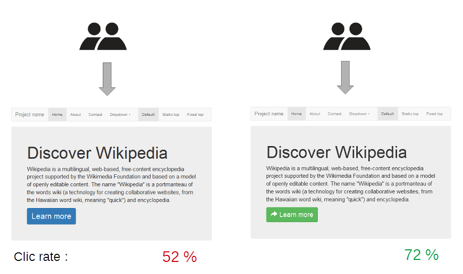
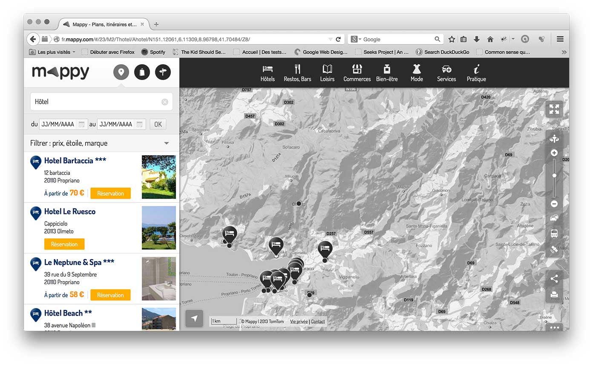

Les A/B tests sont aujourd’hui une pratique courante sur les applications web et mobile.
Le principe est de proposer une variante pour une fonctionnalité pour une partie de l’audience et ce, pendant une période donnée.
Exemples :
- changement de couleur d’un bouton,
- présentation de produits sous forme de grille plutôt que sous forme de liste.
L’intérêt est ensuite de suivre les métriques (clics, taux de conversion, achats, etc) pour le groupe A (sans variante) et le groupe B (avec la variante).
 Source de l’image : Wikipedia
A l’issue de la période, si les métriques pour la variante sont meilleures que la version normale, on transforme la variante en version par défaut.
Il est tout à fait possible d’avoir plus qu’une variante que l’on partagera entre l’audience totale (33 % pour 2 variantes et la référence, 25 % pour 3, etc).
Le but des A/B tests est de pouvoir tester ce qui fonctionne le mieux en condition réelle pour améliorer continuellement son produit.
Premier essai sur mappy.com
L’objectif de Mappy est de tester différentes variantes du site web, que cela soit purement graphique ou à travers des écrans/comportements différents.
Nous avons initialement utilisé un outil externe fonctionnant via l’inclusion d’un JavaScript externe depuis le site Mappy.
L’avantage d’une telle solution est qu’elle est facilement mise en place sur le site (une simple balise script) et que la création des tests peut se faire via l’outil externe en ligne (via du "drag and drop" ou via l’écriture de JavaScript directement dans l’outil).
Le principal inconvénient d’une telle solution est qu’il est difficile de réaliser tous les A/B tests souhaités.
En effet, il est difficile de se brancher sur des appels Ajax ou d’autres comportements et on en revient à "surveiller" des changements sur des éléments DOM. Cela n’est pas performant et on constate rapidement du "flickering" (version initiale suivi de la variante après quelques millisecondes).
Par ailleurs, l’inclusion d’un script externe est toujours délicate, notamment en terme de performances (requêtes, poids, etc) et de sécurité (non maîtrise du script inclus).
Une meilleure solution
Après avoir validé une preuve de concept, nous avons rapidement réalisé qu’il était trivial de gérer les tests A/B soi-même.
Il s’agit simplement :
- d’héberger un fichier de configuration indiquant les tests, la répartition, etc,
- d’analyser ce fichier au chargement du site, de tirer un chiffre au hasard pour déterminer le test à appliquer,
- ensuite, pour chaque test, de faire les modifications dans le code pour afficher la variante (ou ne rien faire et afficher la référence).
La partie métrique est également très importante mais nous utilisons simplement notre solution existante (AT Internet ou, pour notre service BI, ajoutons les identifiants d’A/B test et de variante aux requêtes d’API).
Comme exemple, j’utiliserai notre 1er A/B test ayant consisté à proposer 4 couleurs de boutons différentes :

1. Fichier de configuration
Mappy héberge le fichier de configuration des A/B tests sur http://ab.mappy.net/config.json.
Voici le fichier de configuration pour le test sur les couleurs de boutons :
[{
"id": "AB01-couleur-resa", // Identifiant unique du test
"from": "2015-12-18T00:00:00", // Date ou commence le test
"to": "2016-01-01T00:00:00", // Date ou se termine le test
"conditions": {
"platforms": ["ge"], // "ge" pour les grands ecrans, "pe" pour les mobiles
"locales": ["fr_FR"] // sur quel site s applique le test : fr.mappy.com, fr-be,...
},
"variants": [
{ "id": "reference", "from": 0, "to": 25 }, // version de référence,
// utilisé lorsque le chiffre du navigateur est entre 0 et 25 (exclus)
{ "id": "orangefonce", "from": 25, "to": 50 }, // 1ère variante, entre 25 et 50
{ "id": "rose", "from": 50, "to": 75 }, // etc
{ "id": "lavande", "from": 75, "to": 100 }
]
}]
2. AbTestModel et AbTestCollection
Nous utilisons un modèle Backbone comme objet pour gérer chaque A/B test.
Il s’agit de l’AbTestModel.
Ce dernier charge la configuration et la valide (vérification de la présence des champs, que les totaux des variantes fassent 100 %, etc).
Il offre également une méthode isTargetted qui retourne true si le test est éligible pour le navigateur courant (s’il répond aux critères).
Cette méthode se décompose en 3 parties : isTargettedByPlatform, isTargettedByLocale et isTargettedByDate.
Une autre méthode, getVariant, retourne l’une des variantes en ayant préalablement tiré un chiffre au hasard via getRandomId.
Enfin, la méthode start est appelée lorsque l’on souhaite démarrer le test.
Cette dernière change un état interne et se doit de lancer un appel de tag.
var _ = require('underscore');
var Backbone = require('backbone');
var AbTestModel = module.exports = Backbone.Model.extend({
parse: function (resp) {
resp.from = new Date(resp.from); // Conversion des dates
resp.to = new Date(resp.to);
return resp;
},
validate: function (attributes) {
// Vérification des champs obligatoires
var mandatory = ['id', 'from', 'to', 'variants', 'conditions'];
if (!_.every(mandatory, function (attr) {
return !!attributes[attr];
})) {
return 'missing attribute in abtest configuration';
}
// Vérification que le total des variantes fasse 100 %
var lastLimit = 0,
valid = true,
sum = 0;
_.each(attributes.variants, function (attr) {
if (attr.from !== lastLimit || !attr.id) {
valid = false;
}
lastLimit = attr.to;
sum += attr.to - attr.from;
}, this);
valid = sum !== 100 ? false : valid;
if (!valid) {
return 'invalid abtest variants';
}
// Vérification des conditions
if (!attributes.conditions.platforms || !attributes.conditions.platforms.join ||
!attributes.conditions.locales || !attributes.conditions.locales.join) {
return 'invalid abtest conditions';
}
},
// Le navigateur courant correspond-il à la cible ?
isTargetted: function () {
return this.isTargettedByDate() && this.isTargettedByPlatform() && this.isTargettedByLocale();
},
// Est-ce la bonne date ?
isTargettedByDate: function () {
var now = new Date();
return (this.get('from') < now && this.get('to') > now);
},
// Est-ce la bonne taille d’écran (mobile ou navigateur de bureau) ?
isTargettedByPlatform: function () {
if (_.indexOf(this.get('conditions').platforms, 'ge') > -1 &&
parameters.size > parameters.sizes.medium) {
return true;
}
if (_.indexOf(this.get('conditions').platforms, 'pe') > -1 &&
parameters.size <= parameters.sizes.medium) {
return true;
}
return false;
},
// Est-ce le bon domaine ?
isTargettedByLocale: function () {
return _.indexOf(this.get('conditions').locales, window.parameters.locale) > -1;
},
// Tirage au sort d’une valeur qui permettra de déterminer la variante
getRandomId: function () {
var ab = JSON.parse(localStorage.get('ab') || '{}');
if (!ab || ab.id !== this.id) {
ab = {
id: this.id,
randomId: Math.floor(Math.random() * 100)
};
localStorage.set('ab', JSON.stringify(ab)); // Variante persistée dans le localStorage, afin de servir la même variante de visite en visite
}
return ab.randomId;
},
// Quelle est la variante pour ce navigateur ?
getVariant: function () {
var variant = _.find(this.get('variants'), _.bind(function (v) {
return this.getRandomId() >= v.from && this.getRandomId() < v.to;
}, this));
return variant;
},
// Démarrage du test
start: function () {
if (!this.started) {
// Envoi d’un tag à AT Internet pour signaler le début du test
// http://help.atinternet-solutions.com/FR/implementation/specific_tags/tg_abtesting_fr.htm
this.started = true;
}
}
});
Le fichier de configuration est un tableau d’objet JSON.
Nous utilisons donc une collection Backbone, AbTestCollection, qui se charge de récupérer ce fichier via Ajax lors d’un appel sur la méthode fetch et d’instancier les modèles AbTestModel.
var _ = require('underscore');
var Backbone = require('backbone');
var AbTestModel = require('../model/AbTestModel');
var AbTestCollection = module.exports = Backbone.Collection.extend({
model: AbTestModel, // Model composant la collection
url: '//abtest.mappy.net/config.json',
// Les collections Backbone héritent d’une méthode fetch, effectuant un appel Ajax sur la propriété url
init: function () {
// Test en cours (il n’y en a toujours qu’un seul actif en même temps)
var currentTest = _.find(this.models, _.bind(function (model) {
return model.isTargetted();
}, this));
if (currentTest) {
this.current = currentTest;
}
},
getVariant: function (testId) {
if (this.current && (!testId || this.current.get('id') === testId)) {
return this.current.getVariant();
}
return null;
},
start: function (testId) {
// Appel de start sur le test pour le test en cours
if (this.current && this.current.get('id') === testId) {
this.current.start();
}
}
});
3. Utilisation dans le code
Pour ce test qui consiste à proposer différentes couleurs de boutons, il suffit alors :
- D’instancier la collection pour déterminer le test actif,
- De récupérer la variante de test,
- D’ajouter une classe CSS sur le
bodyqui surchargera les couleurs des boutons, ici dans un fichierless. - De démarrer le test (consistant à envoyer un tag) dès qu’une variante (ou la référence) est affichée à l’utilisateur
var variantBookingColor = Mappy.abTestCollection.getVariant("AB01-couleur-resa");
if (variantBookingColor && variantBookingColor.id) {
$("body").addClass("ab-" + variantBookingColor.id);
}
body.ab-orangefonce .button {
background-color: #f86312;
}
body.ab-rose .button {
background-color: #ea148c;
}
body.ab-lavande .button {
background-color: #8968d4;
}
Et voici le démarrage du test dès l’affichage d’une liste possédant les boutons.
Mappy.abTestCollection.start("AB01-couleur-resa");
En effet, concernant les statistiques, nous ne nous intéressons qu’aux personnes ayant vu la référence ou une variante et non tous les autres visiteurs.
L’exemple ici est simpliste mais, en laissant la liberté côté JavaScript, il est possible de réaliser n’importe quel test.
Par exemple, notre second A/B test propose 2 menus de catégorie différents (donc des modifications CSS mais également d’autres balises HTML et éventuellement une vue Backbone différente). Il est même possible, en ajoutant la variante aux paramètres des ressources JSON, de servir des contenus différents et donc d’étendre le test au code serveur.
Un nom, un logo : Loligo
Pour la petite histoire, ce mini-projet a été baptisé Loligo en honneur à l’espèce de Calamar Loligo Forbesii et sa capacité de camouflage.
Un logo a été réalisé pour l’occasion :
Pour conclure
La solution apportée répond pleinement à nos besoins et supprime les problématiques inhérentes à l’utilisation d’un service externe. Nous gagnons en flexibilité, en performances, en sécurité (plus d’inclusion de JS externe) et les A/B tests s’intègrent à notre workflow et nos outils (validation du code via jshint|eslint, tests unitaires, tests fonctionnels, etc).